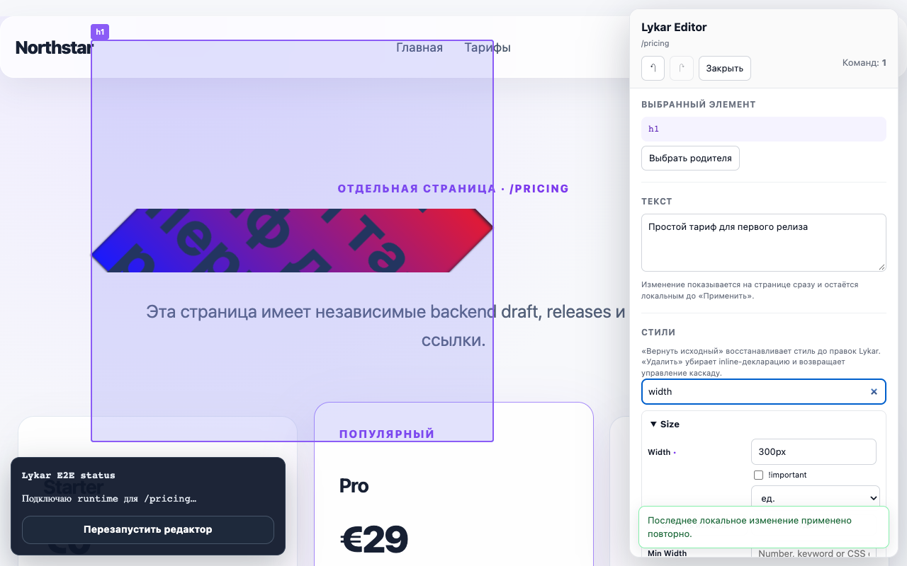
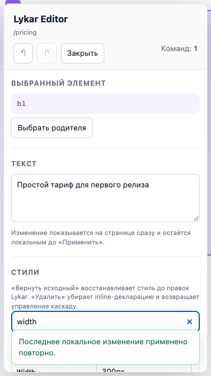

S2 — итоговая приёмка редактора
S2-05.1…S2-05.4 и обязательная зависимость S2-06.8 · 23 сентября 2026
PASS · full editor workflow
Активный SDK editor выполняет команды, объясняет replay в Change Tree, сохраняет и восстанавливает Draft, вручную исправляет failed targets и поставляет полный Style Manager. Посетитель по share-ссылке видит опубликованный Release в отдельном context.
Матрица проверки
| Сценарий | Проверенный результат | Fixture |
|---|---|---|
| Команды и replay | Text/style/attribute/structural actions, identity и dependencies; независимые команды продолжаются после ошибки, причины видны в Change Tree. | replay-safety, versioning-flow, editor unit |
| Persistence | Save → reload → reopen → release → share; lost response reconciles, two-tab conflict сохраняет pending edits. | persistence-recovery, versioning-flow |
| Undo и repair | Saved undo добавляет новую revision; зависимая цепочка target repair previewed до save, без silent rebind. Старый Release неизменяем. | persistence-recovery, editor unit |
| Panel/overlay | Shadow DOM isolation, editor-root исключен из target selection, keyboard/focus, 125% zoom, nested scroll, 1280×800 и 360×640 viewport. Static copy/add предупреждает об отсутствии handlers и component state. | style-matrix, style-editor-acceptance |
| Style Manager | Script/ESM, все секции и типы controls, arbitrary CSS, multi-layer, priority, reset, undo/redo, save/reload/share. | style coverage и budget report |
Desktop и mobile evidence


Проверки и границы
npm run build, npm run typecheck, npm test, npm run test:e2e:http, полный Playwright suite, npm consumer и production asset audit прошли. Browser suite: Chromium — полный набор; Firefox и WebKit — style acceptance, matrix, performance и UI host checks.
Проверены static/SSR страницы. React/Vue reconciliation остаётся S4. Closed shadow roots, чужие iframe, CSS-rule contexts и cross-origin source inspection не входят в поддержку inline editor; это перечислено в отчёте по стилям.